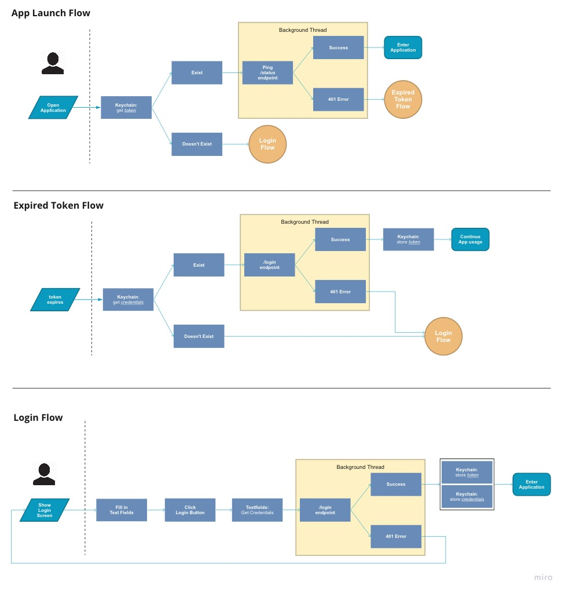
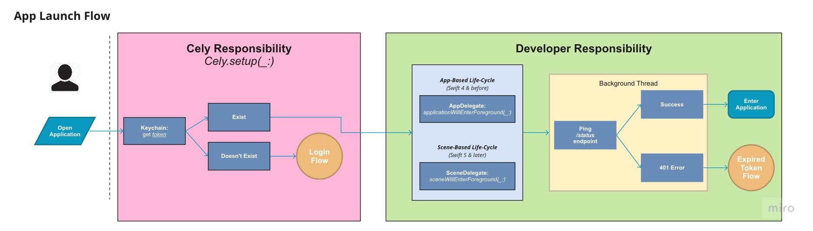
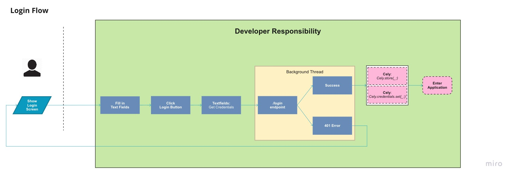
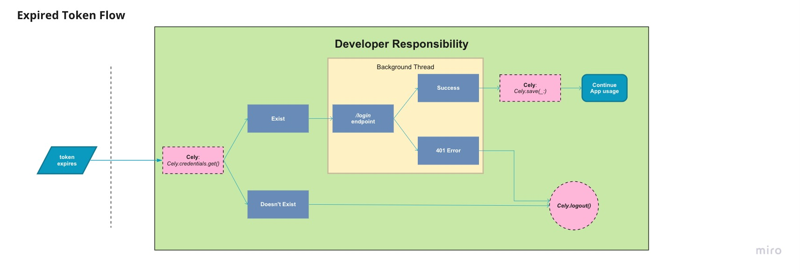

Introduction#
Quiet Re-Authentication allows your application to reauthenticate in the background without requiring the user to login. Below is a diagram illistrating the steps your application should take when adopting this flow.
Quiet Re-Authentication Flow 
Quiet Re-Authentication with Cely#
In the next few sections were going to be going over Cely's role/responsibility in this flow and how to adopt it into your application.
App Launch Flow#

Cely Responsibility#
With the recent changes made to the App's Life Cycle, depending on what version of iOS your application will support, iOS 12 and earlier or iOS 13 and later — you will need to call Cely.setup(_:) in different parts of your app's codebase.
The rest of the guide will follow as if your application supports iOS 13 & later. In the next section we will shift our focus to scene(_:willConnectTo:options:)
// iOS 13 | Swift 5.0 | Xcode 11.0
import Cely
struct User: CelyUser {
enum Property: CelyProperty {
case token = "token"
}
}
class SceneDelegate: UIResponder, UIWindowSceneDelegate {
var window: UIWindow?
func scene(_ scene: UIScene, willConnectTo session: UISceneSession, options connectionOptions: UIScene.ConnectionOptions) {
if let windowScene = scene as? UIWindowScene {
let window = UIWindow(windowScene: windowScene)
self.window = window
window.makeKeyAndVisible()
Cely.setup(with: window, forModel: User(), requiredProperties: [.token], withOptions: [
.homeViewController: UIHostingController(rootView: HomeContentView()),
.loginViewController: UIHostingController(rootView: LoginContentView())
])
}
}
}
As a brief explanation, we pass your application's UIWindow to give Cely access to switch inbetween your Login and Home Screen. Next, we pass an instance of our User model which contains the Property enum. Finally, using the requiredProperties parameter, we tell Cely what properties are required in order to continue to the .homeViewController. In this example, if Cely does not find a property .token in its storage, or if requiredProperties is empty, Cely will redirect the user to .loginViewController.
Developer Responsibility#
Below is an example of what is required of the developer to implement in order to complete the App Launch Flow for Quiet Re-Authentication. We check to see if the user is logged in — then retrieve the token. If no token is returned then we log the user out. Next, we check to see if the user's token is expired. If the token is expired we logout the user. We will finish writing sceneWillEnterForeground(_:) in the Expired Token Flow.
class SceneDelegate: UIResponder, UIWindowSceneDelegate {
...
func sceneWillEnterForeground(_ scene: UIScene) {
if Cely.isLoggedIn() {
guard let token = Cely.get(key: "token") as? String
else { return Cely.logout() }
LoginService.status(for: token) { result in
switch result {
case .success:
case .failure(let error as HTTPError) where error == .unauthorized:
// TODO: Revisit in Expired Token Flow
}
}
}
}
}
class LoginService {
static func status(for token: String, completionHandler: @escaping (Result<Void?, Error>) -> Void) {
// make API call to check token status
completionHandler(someResult)
}
}
Login Flow#

Though a built-in LoginViewController is provided by Cely, as of Cely v3, it is encouraged for this built-in controller to only be used for rapid development/prototyping and not production. In this example, once the API has authenticated our credentials we save the token in keychain using Cely.save(_:). If successful, we also store the user credentials in keychain using Cely.credentials.set(_:). Lastly, we change the user's logged in status with cely using Cely.changeStatus(_:) which will transition our application to the .homeViewController. Below is a pseudo code example:
// LoginViewController.swift
let username = usernameTextField.text
let password = passwordTextField.text
Login.Service(username: username, password: password)
class LoginService {
...
static func login(username: String, password: String) {
API.login(username: username, password: password) { result in
switch result {
case .success(let token):
if Cely.save(token, forKey: "token", securely: true) == .success {
Cely.credentials.set(
username: username,
password: password,
server: "api.example.com"
)
Cely.changeStatus(to: .loggedIn)
}
case .failure(let error):
// handle error
}
}
}
}
Expired Token Flow#

If you come from a Backend development background, the idea of implementing a refresh token to handle re-authentication may seem like the best option, but its going to cost a bit of overhead and precious developer time. Instead, because of the security Keychain Services provides, we are able to store users credentials directly onto the device, making re-authentication extremely easy. How does Cely help us do this?
Up until this point we have stored the API token in Keychain Services using Cely.save(_:), but it is expected for this token to eventually expire. When it does expire, we will be receiving 401 errors from our API. Since we are following the Quiet Re-Authentication Flow, our application will re-authenticate the user instead of logging them out.
There are two places where we need to handle Re-authentication.
- When the app launch, (if the user is already logged in)
- When an API request returns
401error
App Launch#
With Scene based life-cycle events sceneWillEnterForeground(_:) will get called every time your application enters the foreground, regardless if its from a terminated/suspended state or background state.
Below is a pseudo code example for when the application starts up:
class SceneDelegate: UIResponder, UIWindowSceneDelegate {
...
func sceneWillEnterForeground(_ scene: UIScene) {
guard Cely.isLoggedIn() else { return }
guard let token = Cely.get(key: "token") as? String
else { return Cely.logout() }
LoginService.status(for: token) { result in
switch result {
case .success:
case .failure(let error as HTTPError) where error == .unauthorized:
// * HERE *
let credentials = Cely.credentials.get()
LoginService.reAuthenticate(username: credentials.username, password: credentials.password) {
// ...
}
}
}
}
}
class LoginService {
...
static func reAuthenticate(username: String, password: String, completionHandler: @escaping (Result<Void?, Error>) -> Void) {
API.login(username: username, password: password) { (result) in
switch result {
case .success(let token):
if Cely.save(token, forKey: "token", securely: true) == .success {
return completionHandler(.success(nil))
}
case .failure(let error):
// handle error
// Log user out
}
}
}
}
Handle 401 errors from API#
It is up to the developer's discretion on how the second example, API request returns 401 error, will be architected. But essentially, you will need to do the following:
- Intercept a failed response from an API request
- Re-Authenticate user
- on success:
- re-request failed API request and continue original call sequence
- on failure:
- log user out
- on success:
class SomeService {
static func getSomeData(with id: String, completionHandler: @escaping (Result<Void?, Error>) -> Void) {
API.someEndpoint(id: id) { (result) in
switch result {
case .success(let data):
// do something with data
case .failure(let error as HTTPError) where error == .unauthorized:
let credentials = Cely.credentials.get()
return LoginService.reAuthenticate(username: credentials.username, password: credentials.password) { (result) in
switch result {
case .success(let token):
// * UPDATE TOKEN *
if Cely.save(token, forKey: "token", securely: true) == .success {
return SomeService.getSomeData(with: id, completionHandler: completionHandler)
}
case .failure(let err as HTTPError) where err == .unauthorized:
// handle error
// Log user out
}
}
}
}
}
}
Upon success, since the credentials used to re-authenticate are still valid, only update the token to avoid multiple expensive calls.
Conclusion#
In conclusion, with this guide you should be given a high level overview of how to implement Quiet Re-Authentication in your application using Cely. This document is a living document so if something is not clear or if you feel we are missing something, please open up an issue on this repo. The Cely team values documentation above all, so your help to improve it would greatly be appreciated 😀.